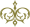
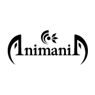

PROFILE
自己紹介

古賀 ユウタ Yuta Koga
福岡出身。デザイン系の大学を卒業後、デザイン事務所で勤務をしながら、2014年から都内を中心に本格的に活動開始。現在はフリーのグラフィックデザイナーとして活動。 photo manipurationという画像合成の手法やイラスト、アナログ絵を使用し、絵画調の幻想的なテイストの作品や真逆の現代的なファッショナブルな作風を得意としています。展示会参加を中心に、グッツの制作など、活動の幅を広げながらアート活動を行っています。

- 18.12 展示会【Nude on mind】参加
- 18.11 Design Festa vol.48 参加
- 18.08 展示会『アリフレタカタチ展』出展
- 18.06 【展示会】デジタルデータフェスティバル出展
- 18.03 展示会「Synthese・狂騒と静寂」出展
- 17.11 Design Festa vol.46 参加
- 17.06 緊縛展 【Liberation of bind】出展
- 17.03 展示会『WORLD OF FANTASY -mode SKY CITY-』出展
- 16.11 Design Festa vol.44 参加
- 16.08 展示会『Same location Extra』出展
- 16.05 Design Festa vol.43 出展
- 15.11 Design Festa vol.42 出展
- 15.06 コミティア112 出展（Xana∝deuX名義）
- 15.03 ARTiSM MARKET 2015春 出展（Xana∝deuX名義）
- 14.12 ARTiSM MARKET 2014冬 出展（Xana∝deuX名義）
- 14.11 Design Festa vol.40 出展（Xana∝deuX名義）
- 14.05 Design Festa vol.39 出展
- 10.03 Asia Degital Art Award 2010 B賞 優秀賞受賞
ART
Photomanipulationを用いた写真アート作品、またイラスト作品を多数制作しております。 ファンタジック、モダンファンタジーなど非現実な作風をお楽しみください。 また、人物との相性が良いので、モデルの方とのコラボレーション作品やコスプレアート作品など、一緒に作品制作ができる方を募集しております。contactよりご連絡くださいませ。 また、Web上では掲載していない作品も含めた作品集、ポストカードなど、販売しております。
DESIGN
紙媒体、WEBのデザインのお仕事を承っております。紙媒体デザインに関しては、ポスター、フライヤー、ロゴデザイン、レタッチなど、入稿まで対応致します。Webに関しては、ビジュアルデザインのみのご対応となります。お仕事のご依頼ございましたらご連絡くださいませ。
EXHIBITION
作品の展示に積極的に参加しております。photomanipulation作品が参加可能な展示がございましたら、ぜひご連絡くださいませ。参加展示会は上の経歴よりご確認くださいませ。